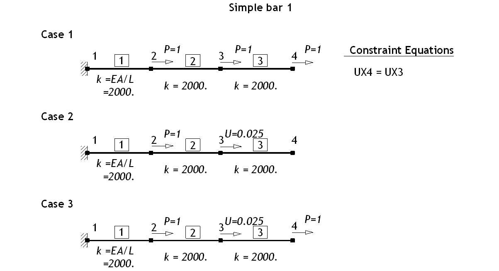
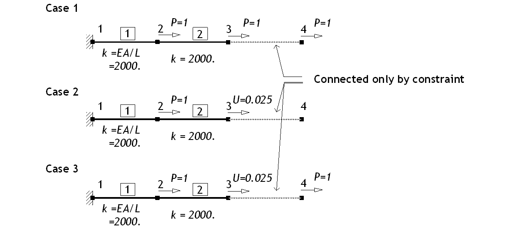
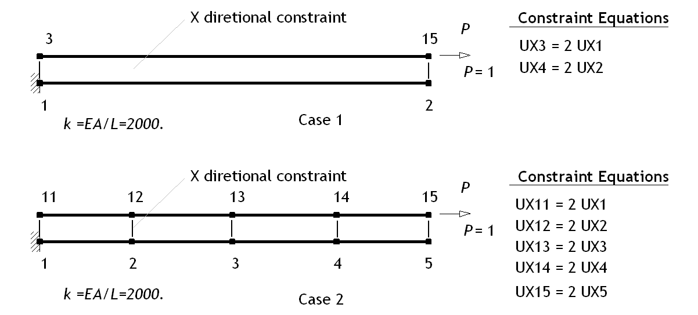
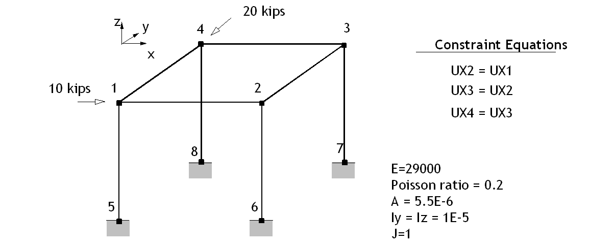
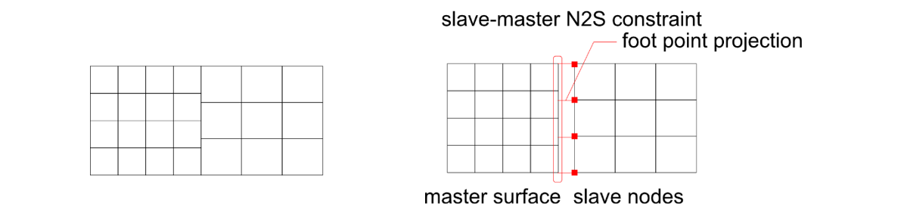
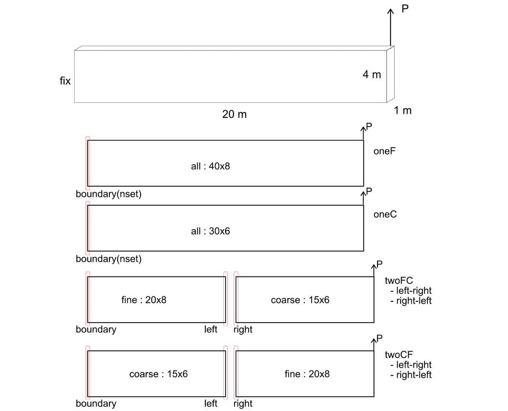
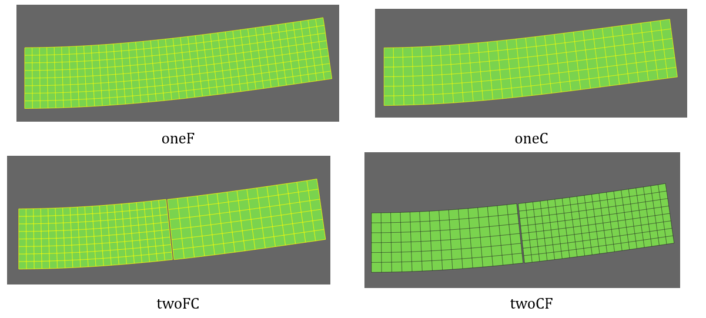

E.10 Simple Constraints
E.10.1 Simple Constraint 1
Figure E.10.1에 제시된 구조물에서 구속조건을 부과하여 해석을 수행하였다. 모든 하중 경우는 UX4 = UX3의 구속조건이 부과되어 있다. Case 1은 하중이 부과된 자유되에 대한 구속조건식을, Case 2는 변위가 부과된 자유도에 구속조건이 있는 경우를 검토하기 위한 것이다. Case 3은 변위가 부과된 자유도에 연결된 slave DOF에 하중을 가력한 경우이다. 본질적으로 모든 하중 경우는 동일한 응답을 나타내는 같은 문제로 자유도의 변위 응답을 모두 동일하만, 절점에서의 반력이 서로 다르게 표시될 수 있다.

Figure E.10.1 Analysis Model
Table E.10.1 Analysis Results (Case 1)
(a) Node Results
| Node | Displacement | External Load | Internal Load | Remark |
|---|---|---|---|---|
| 1 | 0.0000 | -3.0 | -3.0 | |
| 2 | 0.0015 | 1.0 | 1.0 | |
| 3 | 0.0025 | 1.0 | 2.0 | |
| 4 | 0.0025 | 1.0 | 0.0 |
(b) Element Results
| Element | Axial Force | Remark |
|---|---|---|
| 1 | 3.0 | |
| 2 | 2.0 | |
| 3 | 0.0 |
Table E.10.2 Analysis Results (Case 2)
(a) Node Results
| Node | Displacement | External Load | Internal Load | Remark |
|---|---|---|---|---|
| 1 | 0.0000 | -3.0 | -3.0 | |
| 2 | 0.0015 | 1.0 | 1.0 | |
| 3 | 0.0025 | 2.0 (반력) | 2.0 | |
| 4 | 0.0025 | 0.0 | 0.0 |
(b) Element Results
| Element | Axial Force | Remark |
|---|---|---|
| 1 | 3.0 | |
| 2 | 2.0 | |
| 3 | 0.0 |
Table E.10.3 Analysis Results (Case 3)
(a) Node Results
| Node | Displacement | External Load | Internal Load | Remark |
|---|---|---|---|---|
| 1 | 0.0000 | -3.0 | -3.0 | |
| 2 | 0.0015 | 1.0 | 1.0 | |
| 3 | 0.0025 | 1.0 (반력) | 2.0 | |
| 4 | 0.0025 | 1.0 | 0.0 |
(b) Element Results
| Element | Axial Force | Remark |
|---|---|---|
| 1 | 3.0 | |
| 2 | 2.0 | |
| 3 | 0.0 |
E.10.2 Simple Constraint 2

Figure E.10.2 Analysis Model
Table E.10.4 Analysis Results (Case 1)
(a) Node Results
| Node | Displacement | External Load | Internal Load | Remark |
|---|---|---|---|---|
| 1 | 0.0000 | -3.0 | -3.0 | |
| 2 | 0.0015 | 1.0 | 1.0 | |
| 3 | 0.0025 | 1.0 | 2.0 | |
| 4 | 0.0025 | 1.0 | 0.0 |
(b) Element Results
| Element | Axial Force | Remark |
|---|---|---|
| 1 | 3.0 | |
| 2 | 2.0 | |
| 3 | - |
Table E.5.5 Analysis Results (Case 2)
(a) Node Results
| Node | Displacement | External Load | Internal Load | Remark |
|---|---|---|---|---|
| 1 | 0.0000 | -3.0 | -3.0 | |
| 2 | 0.0015 | 1.0 | 1.0 | |
| 3 | 0.0025 | 2.0 (Reaction) | 2.0 | |
| 4 | 0.0025 | 0.0 | 0.0 |
(b) Element Results
| Element | Axial Force | Remark |
|---|---|---|
| 1 | 3.0 | |
| 2 | 2.0 | |
| 3 | - |
Table E.10.6 Analysis Results (Case 3)
(a) Node Results
| Node | Displacement | External Load | Internal Load | Remark |
|---|---|---|---|---|
| 1 | 0.0000 | -3.0 | -3.0 | |
| 2 | 0.0015 | 1.0 | 1.0 | |
| 3 | 0.0025 | 1.0 (Reaction) | 2.0 | |
| 4 | 0.0025 | 1.0 | 0.0 |
(b) Element Results
| Element | Axial Force | Remark |
|---|---|---|
| 1 | 3.0 | |
| 2 | 2.0 | |
| 3 | - |
Input File
-
sc1.inp
-
sc2.inp
-
sc3.inp
-
sc4.inp
E.10.3 Unrealistic Constraint
그림과 같이 상하의 트러스 부재의 각 절점이 평행하게 X 방향으로 구속된 경우에 대해 해석을 수행하였다. 해는 해석적으로 유도할 수 있으며 표에 결과를 표시하였다.

Figure E.10.3 Analysis Model
Table E.10.7 Analysis Results (Case 1)
(a) Node Results
| Node | Displacement | External Load | Internal Load | Remark |
|---|---|---|---|---|
| 1 | 0.0000 | -2.0 | -0.4 | |
| 2 | 0.0020 | 0.0 | 0.4 | |
| 11 | 0.0000 | 0.0 | -0.8 | |
| 12 | 0.0040 | 1.0 | 0.8 |
(b) Element Results
| Element | Axial Force | Remark |
|---|---|---|
| 1 | 0.4 | |
| 2 | 0.8 |
Table E.10.8 Analysis Results (Case 2)
(a) Node Results
| Node | Displacement | External Load | Internal Load | Remark |
|---|---|---|---|---|
| 1 | 0.0000 | -2.0 | -0.4 | |
| 2 | 0.0020 | 0.0 | 0.0 | |
| 3 | 0.0040 | 0.0 | 0.0 | |
| 4 | 0.0060 | 0.0 | 0.0 | |
| 5 | 0.0080 | 0.0 | 0.4 | |
| 11 | 0.0000 | 0.0 | -0.8 | |
| 12 | 0.0040 | 0.0 | 0.0 | |
| 13 | 0.0080 | 0.0 | 0.0 | |
| 14 | 0.0012 | 0.0 | 0.0 | |
| 15 | 0.0016 | 1.0 | 0.8 |
(b) Element Results
| Element | Axial Force | Remark |
|---|---|---|
| 1 | 0.4 | |
| 2 | 0.4 | |
| 3 | 0.4 | |
| 4 | 0.4 | |
| 5 | 0.8 | |
| 6 | 0.8 | |
| 7 | 0.8 | |
| 8 | 0.8 |
□ Remark
해에 대한 수계산을 소개한다. 운동방정식을 구성하면 다음과 같다.

구속 조건
을 부과하여 condensed system을 구성하면 다음과 같다.
경계조건을 부과하면 \(\small u_{2} = 0.0002\), \(\small P_{1} = - 2\)로 계산된다;
각 요소의 내력은 1번 요소에 0.4, 2번 요소에 0.8의 인장력이 발생하게 된다. 요소의 내력을 절점 단위로 assemble한 internal nodal force는 다음과 같다.
외력 P와 내력 F는 condensed system을 기준으로 equibrium을 만족한다. 즉, 각각에 대한 condensed force는 \(\small\begin{bmatrix} - 2 & + 2\end{bmatrix}^{T}\)로 동일하다. 내력 F는 모든 성분을 합산하면 0을 만족하지만, 외력 P는 0이 아니다. 그 이유는 비 현실적인 구속조건을 부과했기 때문이다.
Input File
-
urc1.inp : Case 1의 입력파일
-
urc4.inp : Case 2의 입력파일
E.10.4 Constraint of Space Frame
그림과 같은 space frame에 임의 구속조건을 부과한 후 Sap2000의 해석결과와 비교하였다. *Constraint 명령에 의한 구속조건은 변환법(transformation method)로 처리한다. 변환법에서는 한 개의 구속조건식에 대응하는 한 개의 slave DOF가 존재하며, 일반적으로 다음과 같은 제한사항이 있는 것으로 알려져 있다.
-
한번 사용된 slave DOF는 다른 구속조건식에서 master DOF로 사용될 수 있으나 slave DOF로 다시 사용될 수는 없다.
-
Slave DOF는 변위경계조건을 가지는 dof(zero dof나 prescribed dof)가 될수 없다. 하지만 외부하중(nodal load)은 줄 수 있다.
hfAnalyzer는 상기 조건을 특수한 처리방법을 통해 처리하게 되므로 신경쓸 필요가 없다. 다음은 테스트 예이다.
-
Case 1: UX1 - UX4 = 0, UX2 - UX4 = 0, UX3 - UX4=0
-
Case 2: UX1 - UX4 = 0, UX2 - UX1 = 0, UX3 - UX1=0
-
Case 3: UX1 - UX4 = 0, UX2 - UX1 = 0, UX3 - UX2=0
-
Case 4: UX1 - UX2 = 0, UX2 - UX3 = 0, UX3 - UX4=0, UX4-UX1=0(over)

Figure E.10.4 Analysis Model
Table E.10.9 Analysis Results (Case 1)
| Classification | Node | Degree of Freedoms | Remark | |||||
|---|---|---|---|---|---|---|---|---|
| X | Y | Z | RX | RY | RZ | |||
| Displacement | 1 | 1134.7 | -2481.6 | -126.47 | 151.65 | 83.256 | 0.01039 | |
| 2 | 1134.7 | -1759.8 | -379.39 | 151.65 | 83.256 | 0.01039 | ||
| 3 | 1134.7 | -1820.9 | 126.46 | 181.37 | 83.256 | 0.017191 | ||
| 4 | 1134.7 | -3015 | 379.4 | 181.38 | 83.256 | 0.017191 | ||
| Reaction | 5 | -2.5 | 5.9972 | 2.0172 | -34.384 | -14.914 | 12.555 | |
| 6 | -2.5 | 3.4855 | 6.0513 | -21.825 | -14.914 | 12.555 | ||
| 7 | -2.5 | 3.1809 | -2.0171 | -21.164 | -14.914 | 20.773 | ||
| 8 | -2.5 | 7.3364 | -6.0514 | -41.942 | -14.914 | 20.773 | ||
Input File
- fc.inp
E.10.5 NodeToSurface Constraint
NodeToSurface 구속조건은 slave node를 master surface에 연결하는 구속조건을 의미한다. 입력시 slave surface – master surface 형태로 부과할 수 있는데 먼저 기입된 slave surface는 surface에 포함된 절점을 slave node로 변경되어 입력되게 된다.

Figure E.10.5 Verification Model (Cantilever with 20\*4\*1 m)

Figure E.10.6 Verifcation Models

Figure E.10.7 Verifcation Models – Deformed Shape
Table E.10.10 Analysis Results
| oneC | oneF | twoF2C | twoC2F | |||
|---|---|---|---|---|---|---|
leftToRight (fineToCoarse) |
rightToLeft (coarseToFine) |
leftToRight (coarseToFine) |
rightToLeft (fineToCoarse) |
|||
Static analysis (end load) |
19599 | 19460 | 19503 | 19475 | 19556 | 19551 |
Frequency analysis (f1, Hz) |
0.158249 | 0.15777 | 0.157817 | 0.157717 | 0.158231 | 0.158191 |
일반적으로 slave-master 관계에서 master를 더 딱딱하거나 성긴(rigid and coarse) 쪽으로 설정해야 한다(ABAQUS). 하지만 본 예제에서는 충분한 메쉬를 사용하기 때문에 거동에 큰 영향을 주는 왼쪽 메쉬의 거동을 잘 표현할 수 있는 경우가 보다 정해에 근접함을 알 수 있다.
References
- R. D. Cook, D. S. Malkus, M. E. Plesha, and R. J. Witt (2002) “Concepts and Applications of Finite Element Analysis", Forth Edition pp. 491